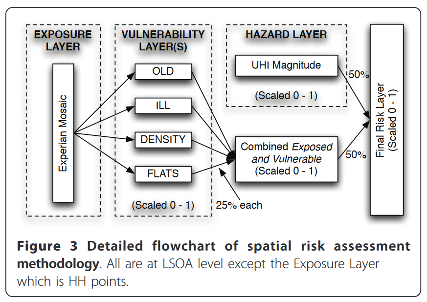
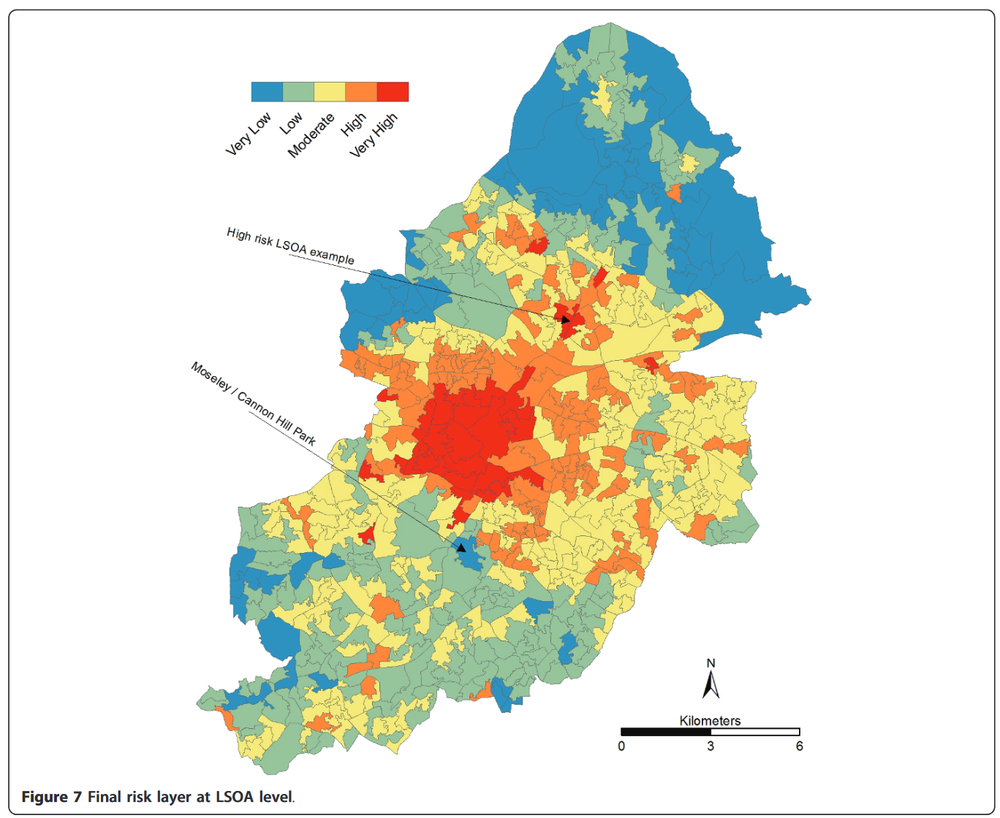

4 Case Study: Athens
4.1 Summary
How can remote sensing data be applied to help achieve policy goals?
Cities across the globe are introducing policies and targets to address the growing challenges of climate change, disaster resilience, and sustainability. This case study explores the approach of the Greek capital, Athens, and how a policy to address the Urban Heat Island (UHI) effect and protect residents from deadly heatwaves could incorporate remote sensing data.
4.1.1 The Policy Context
In 2021, the City of Athens appointed a Chief Heat Officer, Elena Myrivili - a European first, and the second globally following a similar appointment in Miami, Florida, in the same year (Harvey 2021). Although a temporary position, Myrivili’s role as Chief Heat Officer was designed to raise the profile of heat as the city’s deadliest climate event, and to coordinate a metropolitan-scale response to building heat resilience - through strategies such as increased green space and urban canopy, adjusting the design of roads and buildings, and improving systems to warn residents during particularly dangerous heatwaves.
Watch the video below to see Myrivili outline the impacts heat has had on her city, and the broad strategies to combat this.
Policy goals outlined by the Chief Heat Officer:
- Increase urban greening
“The first and most important goal is to make the city greener and to create an infrastructure that would bring more nature and water into the city … We need to increase the number of parks in Athens that already provide shelter to vulnerable residents. Parks can help a great deal to bring down temperatures in the city; they absorb CO2 emission and retain water, they increase biodiversity, create oxygen, clean the air from microparticles so they also help to fight pollution.”
- Provide immediate relief to the most vulnerable
“The second solution will be carried out in the short-term. The plan is to give wider access to air conditioning to the most vulnerable groups and help them to lower temperatures in their homes during heatwaves. Air conditioning will play a role in this case. We know it increases outdoor heat and CO2 emissions, but it will be necessary to protect people from getting sick or dying.”
- Raise awareness and improve risk communication
“We are considering naming heatwaves and categorising them like hurricanes. This will make events more prominent in people’s minds, turning weather phenomena into an entity. People are able to think of an event more clearly if they can call it by a name and media can more easily communicate it to their audiences. Categorising heatwaves will help authorities to set up risk management protocols.”
Source: (Horowitz 2021)
Concurrently, the City of Athens has also developed a Climate Change Action Plan which feeds into much of the work of the Chief Heat Officer, and includes goals to transition 30% of the city surface to vegetation and/or permeable surfaces by 2030, and in the same time frame ensure that 70% of the city’s populations has access to green space within a 15 minute walk.
These goals are reflected in both the regional and global context. Athens is prominently involved in European Union initiatives for urban resilience as a signatory to the European Commission’s Covenant of Mayors for Climate and Energy. In a broader sense, addressing climate change as an impact on health and livelihoods aligns with the United Nation’s Sustainable Development Goals, a high-level framework for directing global patterns of development and resilience (United Nations 2022), and the UN Environment Program’s (UNEP) Beat the Heat report, a sustainable cooling handbook for cities (United Nations Environment Program Mon, 11/08/2021 - 14:57).
4.2 Application
Potential applications for remote sensing data have been broken down into the three main strategies outlined by Myrivili above: (1) Increase urban greening, (2) provide relief to the most vulnerable, and (3) improve risk communication.
4.2.1 Increase urban greening
Using remote sensing data to monitor vegetation and land cover in urban areas is well-established, and there is a depth of scientific literature to demonstrate this (for example, Zha, Gao, and Ni 2003; Wu and Murray 2003). Through automated classification of surface land use/land cover (LULC) using remote sensing, the city of Athens could directly measure progress towards the goal of 30% land cover being vegetation or permeable surfaces by 2030. Yuan et al. (2007) demonstrate that freely available Landsat imagery would generally provide a sufficient data source for this task.
4.2.2 Provide relief to the most vulnerable
Including a dimension of vulnerability into risk measurement suggests the need for data fusion - combining remote sensing data of LULC and surface temperature with spatial socioeconomic data, collected through a population census, government administrative datasets, or research surveys. Johnson et al. (2012) showed that calculating an extreme heat vulnerability index (EHVI) consisting of census data and remotely sensed imagery was able to explain nearly 80% of the variance in heat-health vulnerability when applied to a heatwave event in Chicago, and accurately captured a trend of higher death rates in high risk zones and lower death rates in low risk zones. A similar approach has been applied by researchers in Birmingham, UK (Tomlinson et al. 2011) to identify the spatial distribution of heat vulnerability.


In Athens, these approaches could be used to provide an evidence basis for policy intervention, identifying areas of greatest need for rapid intervention such as installing air conditioning or creating public “cool zones”, and providing subsidies for energy use to address pockets of energy poverty.
4.2.3 Improve risk communication
As mentioned in the quote and video above (The Policy Context), the City of Athens has proposed naming and categorising heatwave events, in an attempt to improve public awareness of severity and the associated risk. The city has already put this proposal into action, working with the National Observatory of Athens to incorporate meteorological remote sensing data into a digital warning mechanism, that will warn user’s smartphones on heatwaves, factors of risk, and nearby cool zones (Horowitz 2021).
4.3 Reflection
Athens provides an interesting case study, as a city that has already taken demonstrable steps towards heat mitigation and a very public awareness campaign through the posting of the Chief Heat Officer. It combines both the high-level rhetoric of sustainability and resilience, which have near universal adoption through initiatives such as the UN Sustainable Development Goals, with concrete policy actions, which are much rarer. In particular, the existing partnership with the National Observatory of Athens highlights that the metropolitan government are already bridging the gap between research and action.